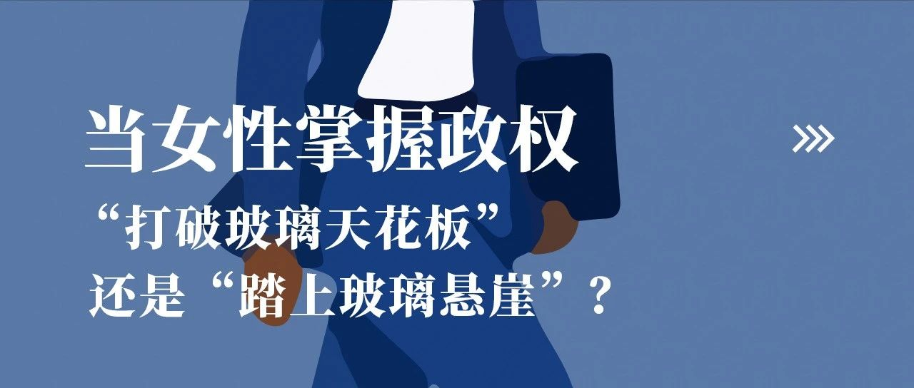

当女性掌握政权：“打破玻璃天花板”还是“踏上玻璃悬崖”？
前言
随着美国大选的临近，全球女性政治领袖的崛起再次引发广泛讨论。无论是墨西哥首位女总统克劳迪娅·欣鲍姆，还是美国副总统卡玛拉·哈里斯，女性领导者正逐渐打破政治权力的“玻璃天花板”。然而，伴随高位而来的往往是“玻璃悬崖”的风险，她们面临的挑战远超想象。本文将进一步探讨这一现象在不同国家的体现。
作者：十三
编辑：Alexwood
01
墨西哥首位女总统：克劳迪娅·欣鲍姆
当地时间6月2日，一个以“大男子主义”社会文化闻名的墨西哥选出了历史上第一任女性总统克劳迪娅·欣鲍姆（Claudia Sheinbaum）。欣鲍姆的竞选活动上一条标语引人注目——“Es Tiempo de Mujeres（现在是女性的时代）”。全球媒体纷纷认为，这是政治权力的“玻璃天花板”正在被打破的又一例证。世界各地有越来越多的女性走上政治舞台，掌握政治权力。这当中不仅仅包括冰岛、北欧诸国这种性别差距较小的国家，也包括众多全球南方（Global South）国家。女性活跃的政党不仅仅是欣鲍姆的莫雷纳党这类左翼政党，也不乏保守右翼政党。但是，在女性逐渐接近政治权力中心的过程中，她们也常常走向一个“玻璃悬崖”（glass cliff）。
02
欣鲍姆继承的烂摊子